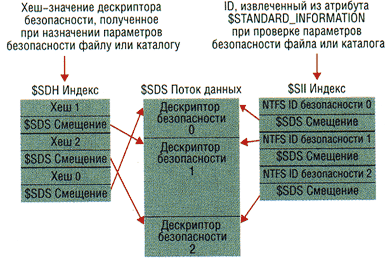
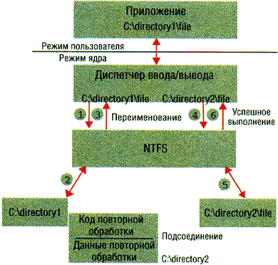
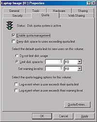
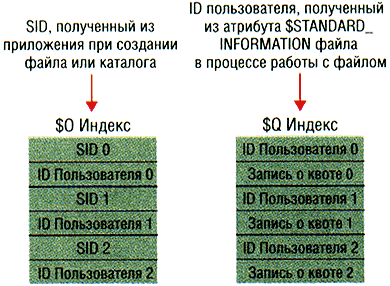
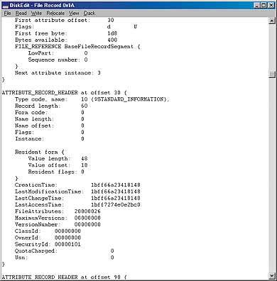

Возможности NTFS
Новые возможности NTFS позволяют оптимизировать использование
диска и расширить функциональность программ.
NTFS, собственная файловая система Windows 2000, непрерывно
совершенствовалась со времени выпуска Windows NT 3.1. Она изначально
обладала возможностями высокоуровневой файловой системы, но в
Windows 2000 появились важные изменения, которые были сделаны в
связи с необходимостью решать проблемы, возникающие на корпоративном
уровне при переходе организаций на NT. Например, благодаря
консолидации информации о безопасности повышается эффективность
повседневной работы с NTFS; другие функции, такие, как управление
квотами, должны использоваться в прикладных программах или
активизироваться и применяться администратором.
На этот раз я расскажу о возможностях версии NTFS 5.0 (NTFS5),
вошедшей в состав Windows 2000, и о влиянии новых функций на
поведение и формат диска NTFS. Приступая к чтению статьи, важно
четко понимать основные принципы построения дисковой структуры NTFS,
а также иметь представление о главной таблице файлов (Master File
Table, MFT), типах атрибутов и резидентных и нерезидентных
атрибутах. Подробно основы NTFS описаны в статье Шона Дейли (Windows 2000 Magazine/RE ?4, 2000). Во врезке <Исследуем дисковые структуры NTFS> рассказано о
некоторых инструментах просмотра и источниках информации об
элементах внутренней структуры данных NTFS.
Универсальная индексация
Некоторые новые свойства NTFS5 основываются на фундаментальной
особенности NTFS, именуемой индексацией атрибутов (attribute
indexing). Индексация атрибутов заключается в сортировке элементов с
атрибутом определенного типа при помощи эффективного механизма
хранения, обеспечивающего быстрый просмотр. В версиях NTFS,
предшествовавших Windows 2000, индексация допускалась только для
индексного атрибута $I30, в котором хранятся элементы каталога. В
процессе индексации атрибутов элементы каталога сортируются по имени
и сохраняются в B+ дереве (форма двоичного дерева, в каждом узле
которого хранится несколько элементов). На Рисунке 1 показана запись
MFT каталога, в трех узлах которой содержится девять элементов, по
три в каждом узле. Корень B+ дерева находится в атрибуте index root
(корень индекса). В записи MFT каталога девять элементов не
умещается, поэтому некоторые элементы приходится хранить в другом
месте. Для этого NTFS выделяет два буфера размещения индексов (index
allocation) для хранения двух записей (как правило, корень индекса и
буферы размещения индексов мо-гут хранить элементы для более чем
трех файлов, в зависимости от длины имен). Размер записи MFT - 1
Кбайт, а размер буферов размещения индексов - 4 Кбайт.
Красные стрелки указывают, что элементы NTFS хранятся в
алфавитном порядке. Если запустить программу, которая открывает файл
e.bak в показанном на рисунке каталоге, то NTFS читает атрибут
индексного корня, содержащий элементы для d.new, h.txt и i.doc, и
сравнивает строку e.bak с именем первого элемента, d.new. NTFS
делает вывод, что алфавитный номер e.bak больше, чем d.new, и
переходит к следующему элементу - h.txt. Повторив операцию
сравнения, NTFS выясняет, что алфавитный номер e.bak меньше, чем
h.txt. Затем NTFS отыскивает в записи каталога h.txt номер
виртуального кластера (virtual cluster number, VCN) индексного
буфера, содержащего элементы каталога, алфавитные номера которых
меньше, чем h.txt, но больше, чем d.new. VCN представляет собой
порядковый номер кластера в файле или каталоге. На основании
информации о размещении кластеров NTFS преобразует VCN в логический
номер кластера (Logical Cluster Number, LCN), т. е. номер кластера
относительно начала тома. Если элемент каталога для h.txt не
содержит VCN индексного буфера, NTFS делает вывод, что каталог h.txt
не содержит файла e.bak и сообщает о неудачном завершении
поиска.
Получив VCN начального кластера индексного буфера, NTFS читает
буфер размещения индексов и просматривает его в поисках совпадений.
На Рисунке 1 первый же элемент индексного буфера совпадает с
критерием поиска, и NTFS читает номер записи MFT e.bak из элемента
каталога e.bak. В элементах каталога хранится и другая информация: в
частности, временные отметки (например, время создания и последнего
изменения), размер и атрибуты. NTFS хранит эту информацию и в записи
MFT файла, но, благодаря дублированию информации в элементе
каталога, читать запись MFT файла при составлении списков каталогов
и выполнении простых файловых запросов не требуется.
Элементы каталогов сортируются по алфавиту, и именно поэтому в
списках каталогов NTFS файлы всегда располагаются в алфавитном
порядке. В отличие от NTFS, FAT не сортирует каталог, поэтому списки
FAT не сортированы. Кроме того, поскольку элементы NTFS хранятся в
B+ дереве, механизм поиска конкретных файлов в больших каталогах
очень эффективен; обычно достаточно просмотреть лишь часть каталога.
Данный подход отличается от линейного метода FAT, при использовании
которого для поиска одного имени иногда приходится просматривать
весь каталог.
В версиях NTFS, предшествовавших Windows 2000, индексировались
только имена файлов, но NTFS5 обеспечивает универсальную индексацию,
сохраняя в индексах произвольные данные и сортируя элементы данных
не по имени, а по другим параметрам. Универсальная индексация
используется для управления дескрипторами безопасности, информацией
о квотах, точках повторной обработки и идентификаторах файловых
объектов, т. е. элементами NTFS5, о которых идет речь в данной
статье.
Консолидированная безопасность
NTFS всегда располагала функциями безопасности, позволяющими
администратору указать пользователей, которым разрешен или запрещен
доступ к тем или иным файлам и каталогам. В версиях NTFS,
предшествовавших Windows 2000, дескриптор безопасности каждого файла
и каталога хранился в его собственном атрибуте безопасности. В
большинстве случаев администраторы назначают единые параметры
безопасности всему дереву каталогов, что приводит к дублированию
дескрипторов безопасности для всех файлов и подкаталогов, к которым
применяются параметры. Такое дублирование может привести к
значительным потерям дискового пространства в многопользовательских
средах, таких, как Windows 2000 Server Terminal Services и NT Server
4.0, Terminal Server Edition (WTS), где дескрипторы безопасности
могут содержать элементы для многих учетных записей. NTFS5
оптимизирует выделение дискового пространства для хранения
дескрипторов безопасности, сохраняя лишь один экземпляр каждого
дескриптора безопасности на томе в центральном файле метаданных с
именем $Secure.

|
| Рисунок 2. Как работает файл метаданных
$Secure. |
В файле $Secure хранятся два индексных атрибута - $SDH и $SII - и
атрибут потока данных, именуемый $SDS (см. Рисунок 2). NTFS5
назначает каждому уникальному дескриптору на томе внутренний
идентификатор безопасности NTFS (не путать с SID, уникально
идентифицирующим компьютеры и учетные записи пользователей) и
хеширует дескриптор безопасности в соответствии с простым
хеш-алгоритмом. Хеш-значение - потенциально неуникальное сокращенное
представление дескриптора. Элементы в индексе $SDH отображают
хеш-значения дескриптора безопасности на область хранения
дескриптора безопасности в атрибуте данных $SDS, а индекс $SII
отображает на область хранения дескриптора безопасности в атрибуте
данных $SDS идентификаторы безопасности NTFS5.
Назначив дескриптор безопасности файлу или каталогу, NTFS
получает хеш-значение дескриптора и просматривает индекс $SDH в
поисках совпадений. NTFS сортирует элементы индекса $SDH согласно
хеш-значению соответствующего дескриптора безопасности и сохраняет
элементы в B+ дереве. Обнаружив для дескриптора совпадение в индексе
$SDH, NTFS определяет смещение дескриптора безопасности элемента из
записи $SDS Offset и считывает дескриптор безопасности из атрибута
$SDS. Если совпадают хеш-значения, но не дескрипторы безопасности,
то NTFS ищет еще один совпадающий элемент в индексе $SDH. Если NTFS
обнаруживает полное совпадение, то файл или каталог, которому
назначен дескриптор безопасности, может установить связь с
дескриптором безопасности в атрибуте $SDS.
NTFS устанавливает связь, считывая идентификатор безопасности из
элемента $SDH и сохраняя его в атрибуте $STANDARD_INFORMATION файла
или каталога. В атрибуте $STANDARD_INFORMATION системы NTFS, который
имеют все файлы и каталоги, хранится базовая информация о файле, в
том числе атрибуты и временные метки. В Windows 2000 этот атрибут
расширен, в нем появилась дополнительная информация, например
идентификатор безопасности файла.
Если NTFS не обнаруживает в индексе $SDH элемента с дескриптором
безопасности, совпадающим с назначаемым, значит, новый дескриптор
уникален для тома, и NTFS назначает ему новый внутренний ID
безопасности. Внутренние ID безопасности NTFS представляют собой
32-разрядные величины, а идентификаторы SID обычно в несколько раз
длиннее, поэтому представление идентификаторов SID идентификаторами
безопасности NTFS позволяет сэкономить место в атрибуте
$STANDARD_INFORMATION. Затем NTFS добавляет дескриптор безопасности
в атрибут $SDS, который сортируется в B+ дереве по ID безопасности
NTFS, и дополняет индексы $SDH и $SII элементами, указывающими на
смещение дескриптора в массиве данных $SDS.
Когда приложение пытается открыть файл или каталог, NTFS
отыскивает дескриптор безопасности файла или каталога с помощью
индекса $SII.
NTFS читает внутренний ID безопасности файла или каталога из
атрибута $STANDARD_INFORMATION записи MFT, а затем использует индекс
$SII файла $Secure для поиска элемента ID в атрибуте $SDS. По
смещению в атрибуте $SDS система NTFS считывает дескриптор
безопасности и завершает проверку безопасности. NTFS5 не удаляет
элементы файла $Secure, даже если с ним не связано ни одного файла
или каталога на томе. Наличие неудаленных элементов не приводит к
значительной потере дискового пространства, так как число уникальных
дескрипторов безопасности на большинстве томов, даже используемых в
течение длительного времени, сравнительно невелико.
Благодаря универсальной индексации NTFS5 файлы и каталоги с
одинаковыми параметрами безопасности эффективно используют общие
дескрипторы. С помощью индекса $SII NTFS быстро отыскивает
дескрипторы безопасности в файле $Secure в ходе проверок
безопасности, а индекс $SDH позволяет быстро определить, имеется ли
в файле $Secure ранее сохраненный дескриптор безопасности, пригодный
для совместного использования с данным файлом или каталогом.
Точки повторной обработки
Точки повторной обработки позволяют приложению связать блок своих
данных с файлом или каталогом, а диспетчеру объектов Object Manager
- выполнить повторный поиск имени, когда прикладная программа
обнаруживает точку повторной обработки. Помимо данных в точке
повторной обработки хранится программный код, который идентифицирует
принадлежность точки повторной обработки определенному приложению.
Сами по себе точки повторной обработки бесполезны, но благодаря им
программисты могут наращивать функциональность NTFS. В Windows 2000
предусмотрено несколько типов точек повторной обработки, в том числе
точки монтирования томов, подсоединения каталогов NTFS и управления
иерархическими хранилищами данных (Hierarchical Storage Management,
HSM). Я объясню, как работают все эти функции, а затем подробно
расскажу о реализации точек повторной обработки.
Любой том NTFS доступен лишь после того, как ему присвоено
символьное обозначение. Точки монтирования NTFS5 позволяют привязать
том к каталогу монтирования на родительском томе NTFS5, не
присваивая символьного обозначения дочернему тому. В результате
появляется возможность объединить несколько томов под одной буквой.
Например, если смонтировать том, содержащий каталог \articles, к
точке монтирования с именем C:\documents, то можно использовать путь
C:\articles\documents для доступа к файлам каталога \documents.
Точка монтирования представляет собой точку повторной обработки,
данные которой состоят из внутреннего имени тома. Внутреннее имя
имеет форму \??\Volume{XX-XX-XX-XX}, где X - числа, образующие
глобальный уникальный ID (GUID), присвоенный тому операционной
системой.
Если открыть файл C:\articles\documents\column.doc, то NTFS
обнаруживает точку монтирования, связанную с каталогом \documents.
NTFS читает хранящиеся в ней данные точки повторной обработки (имя
тома) и передает в Object Manager статус точки повторной обработки.
Диспетчер ввода/вывода перехватывает информацию о статусе,
анализирует данные и определяет, что NTFS обнаружила точку
монтирования. Диспетчер ввода/вывода изменяет искомое имя и
заставляет Object Manager (компонент ядра, который отвечает поиску
имен) провести повторный поиск с измененным путем
\??\Volume{GUID}\documents\column.doc. В процессе повторного поиска
анализ имени \documents\co-lumn.doc продолжится на смонтированном
томе. Создать точки монтирования и составить их список можно с
помощью оснастки Disk Management консоли управления Microsoft
Management Console (MMC) или инструмента командной строки Mountvol,
поставляемого вместе с Windows 2000.
Точки подсоединения каталогов NTFS похожи на точки монтирования,
и диспетчер ввода/вывода и Object Manager выполняют подсоединение
так же, как монтирование. Однако точки подсоединения устанавливают
связь с каталогами, а не с томами. Точки подсоединения Windows 2000
эквивалентны символьным ссылкам UNIX (но в отличие от символьных
ссылок UNIX, точки подсоединения нельзя применять к файлам). Если
создать точку подсоединения C:\articles\documents, связанную с
каталогом D:\documents, то можно обращаться к файлам в D:\documents,
используя путь C:\articles\documents. В точке подсоединения хранится
информация о перенаправленном пути, и если NTFS обнаруживает точку
подсоединения, то, как и в случае с точкой монтирования, диспетчер
ввода/вывода изменяет имя и инициирует повторный поиск имени.
Принцип действия точки подсоединения показан на Рисунке 3. Когда
приложение открывает C:\directory1\file, NTFS обнаруживает точку
повторной обработки в каталоге C:\directory1, указывающую на каталог
C:\directory2. Диспетчер ввода/вывода изменяет имя на
C:\directory2\file, и приложение в итоге открывает файл
C:\directory2\file.

|
| Рисунок 3. Пример точки повторной
обработки. |
В Windows 2000 нет инструментов для создания точек подсоединения,
и Microsoft официально не поддерживает такие инструменты, так как
использование путей с подсоединением может нарушить работу некоторых
прикладных программ. Однако создавать подсоединения и составлять их
списки можно с помощью инструмента Linkd из набора ресурсов
Microsoft Windows 2000 Resource Kit или бесплатной утилиты Junction
(http://www.sysinternals.com/misc.htm).
Повторный анализ пути используется не во всех точках повторной
обработки. В системе HSM точки повторной обработки HSM служат для
прозрачной миграции редко используемых файлов в резервное хранилище
данных. Когда HSM переносит файл в архив, содержимое файла
удаляется, а на его месте создается точка повторной обработки. В
данных точки повторной обработки содержится информация, используемая
системой HSM для поиска файла на архивном носителе. Если
впоследствии приложение обращается к хранящемуся в HSM файлу, то
HSM-драйвер RsFilter.sys (Remote Storage Filter - фильтр удаленного
хранения данных) перехватывает код повторной обработки, пересылаемый
NTFS в Object Manager. Драйвер удаляет точку повторной обработки,
извлекает файл с архивного носителя, а затем повторяет
первоначальный запрос. На этот раз NTFS обращается к файлу, как к
любому другому, и операции по перемещению данных не влияют на работу
приложения.
Если точка повторной обработки связана с файлом или каталогом, то
NTFS создает для нее атрибут с именем $Reparse. В этом атрибуте
хранятся код и данные точки повторной обработки. Поэтому NTFS без
труда обнаруживает все точки повторной обработки на томе, а в файле
метаданных с именем \$Extend\$Reparse хранятся элементы, связывающие
номера записи MTF файла и каталога точки повторной обработки с
ассоцированными с ними кодами повторной обработки. NTFS сортирует
элементы по номеру записи MTF в индексе $R.
Отслеживание квот

|
| Экран 1. Активизация квотирования.
|
Системы Windows 2000 Server и NT Server часто используются в
качестве файл-серверов. Слабое место NT - отсутствие у системного
администратора встроенных инструментов для отслеживания и
ограничения дискового пространства на сервере, занимаемого
отдельными пользователями. Чтобы устранить этот пробел в
функциональности NT, независимые поставщики выпускают несколько
продуктов для управления квотами. Но в Windows 2000 уже есть базовые
функции квотирования, которые во многих случаях позволяют обойтись
без дополнительных инструментов. Функции управления квотами Windows
2000 построены на базе механизма квотирования NTFS (на томах FAT
квоты выделить нельзя) в соответствии с моделью обслуживания
отдельных томов и пользователей. Иными словами, администратор может
использовать интерфейс, показанный на Экране 1, чтобы указать
предупреждения и ограничить дисковое пространство, предоставляемое в
распоряжение пользователя на томе NTFS.

|
| Рисунок 4. Как работает файл метаданных
$Quota. |
NTFS хранит информацию о квотировании в файле метаданных
\$Extend\$Quota, состоящих из индексов $O и $Q. На Рисунке 4
показана структура этих индексов. Точно так же, как NTFS назначает
каждому дескриптору безопасности уникальный внутренний ID
безопасности, каждому пользователю назначается уникальный ID
пользователя. Когда администратор определяет информацию о квоте для
пользователя, NTFS назначает ID пользователя, соответствующий
идентификатору SID пользователя. В индексе $O создается запись,
которая отображает SID на ID пользователя, индекс сортируется по ID
пользователя; в индексе $Q создается запись для управления квотой.
Запись управления квотой содержит величину квоты, выделенной
пользователю, а также размер занимаемого дискового пространства.
Когда приложение создает файл или каталог, NTFS получает SID
пользователя программы и отыскивает соответствующий ID пользователя
в индексе $O. NTFS записывает ID пользователя в атрибут
$STANDARD_INFORMATION нового файла или каталога и засчитывает все
дисковое пространство, выделенное файлу или каталогу, в счет квоты
пользователя. Затем NTFS отыскивает элемент квоты в индексе $Q и
определяет, не превысил ли пользователь своего порога предупреждения
или дискового лимита. Если выделение нового пространства привело к
превышению порога, то NTFS принимает соответствующие меры: например,
заносит запись в журнал системных событий или запрещает пользователю
создать файл или каталог. По мере изменения размера файла или
каталога NTFS обновляет запись управления квотой, связанную с ID
пользователя в атрибуте $STANDARD_INFORMATION. Система NTFS
использует метод универсальной индексации для эффективной привязки
ID пользователя к SID учетной записи и быстрого поиска информации о
квоте пользователя по его идентификатору.
Продолжение следует...
Рассказом о квотировании заканчивается первая часть данной
статьи. Во второй части мы продолжим знакомство с новыми
возможностями NTFS: механизмом отслеживания распределенных связей и
изменений томов, функциями для работы с разреженными файлами и
шифрования данных.
Марк Русинович - доктор философии, редактор Windows 2000
Magazine. С ним можно связаться по адресу: [email protected] или http://www.sysinternals.com/.
Исследуем дисковые структуры NTFS
Для исследования внутренних дисковых структур NTFS существует
несколько общедоступных инструментов. Среди них - DiskEdit,
встроенный инструмент тестирования NTFS, по недосмотру Microsoft
оказавшийся на компакт-диске Windows NT 4.0 Service Pack 4 (SP4),
одна из самых мощных известных мне программ просмотра NTFS.
DiskEdit, окно которого представлено на Экране A, позволяет
ознакомиться со структурами, образующими файлы и каталоги, а также с
данными атрибутов и преобразовать пути файлов и каталогов во входные
коды таблицы MFT. Документация по DiskEdit отсутствует, но я
опубликовал учебное пособие в сборнике бесплатных бюллетеней
Sysinternals Newsletter (http://www.sysinternals.com/newsletter.htm).
Чтобы использовать DiskEdit вместе с Windows 2000, необходимо
скопировать файлы ifsutil.dll, ulib.dll, untfs.dll и ufat.dll из
каталога \winnt\system32 системы Windows NT в каталог, в котором
нужно разместить DiskEdit.

|
| Экран A. Утилита DiskEdit.
|
Те, у кого нет компакт-диска с SP4, могут воспользоваться
утилитой NTFS File Sector Information Utility (NFI), поставляемой
Microsoft в составе пакета OEM Support Tools по адресу: http:\\support.microsoft.com/support/
kb/articles/q253/0/66.asp (помимо NFI в пакете OEM Support
Tools имеются утилиты отладки и расширения отладчика ядра, с помощью
которых администраторы и программисты могут анализировать аварийные
дампы).
С помощью запускаемых из командной строки шаблонов NFI можно
собрать информацию о конкретном файле или каталоге или обо всех
файлах на томе, найти файл или каталог, в котором расположен данный
логический сектор диска, а также отыскать файл или каталог,
содержащий конкретный физический сектор. Например, команда nfi C: 123
сообщает имя файла на томе C:, который содержится в 123 секторе
тома. Чтобы исследовать структуры данных NTFS, можно воспользоваться
этой же командой, не указывая номер сектора, и NFI выдаст подробную
информацию об атрибутах всех файлов на диске. Можно ввести имя файла
метаданных, описанных в статье, и просмотреть содержащиеся в них
атрибуты. Например, если выполнить команду nfi c:\$extend\$quota
на квотируемом томе, то будет видно, что файл $Quota содержит
индексы с именами $O и $Q: File 24
\$Extend\$Quota
$STANDARD_INFORMATION (resident)
$FILE_NAME (resident)
$INDEX_ROOT $O (resident)
$INDEX_ROOT $Q (resident)
Еще один источник информации о дисковой структуре NTFS - книга
Гэри Неббета (издательство
New Readers Publishing, 2000). В приложении приведены определения
многих дисковых структур NTFS (в некоторых случаях отражены
изменения, внесенные в Windows 2000) и содержится исходный текст
Win32-программы, с помощью которой можно получить доступ к
структурам данных в обход драйвера файловой системы NTFS и создать
дамп содержимого тома.
назад
Врезки:
Рисунок 1.
Индексация имен каталогов.
�
|